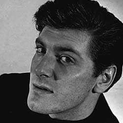

| Home | The Doctors | The Companions | The Villans |
|
|||
|
Steven TaylorSteven Taylor is a fictional character played by Peter Purves in the long-running British science fiction television series Doctor Who. A space pilot from Earth in the future, he was a companion of the First Doctor and a regular in the programme from 1965 to 1966. Steven appeared in 10 stories (45 episodes). Only three of the serials in which Steven appeared as a regular are complete in the BBC archive (The Time Meddler, The Ark and The Gunfighters) |